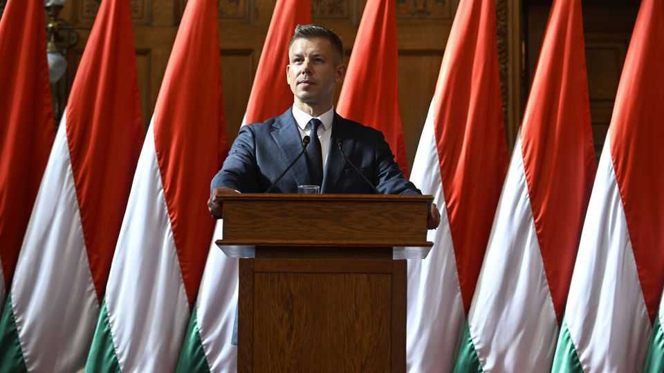

Peter Magyar is trying to fire up Hungarian democracy
A constitutional amendment would burn away the remnants of Viktor Orban’s regime
June 25th 2026

Peter Magyar, Hungary’s prime minister, had two intertwined tasks when he came to power in early May. One was to restore Hungary as a full democracy and a reliable member of the European Union. The other was to unlock billions of euros in funds from the EU, which Hungary’s ailing economy badly needs. These had been frozen because of numerous violations of the rule of law under the reign of Viktor Orban, his predecessor.
Mr Magyar is moving quickly on both fronts. In parliament on June 22nd he announced “Operation Cleansing Fire”: a constitutional amendment that would, among other things, remove Tamas Sulyok, the president (whose term runs until 2029), and Peter Polt, the head of the constitutional court, both loyalists of Mr Orban. He also unveiled plans for a new constitution. Mr Magyar pledged to “free our country from the economic and political mafia”.
The amendment reintroduces mandatory retirement at 70 for the constitutional court’s 15 judges, which would mean the 70-year-old Mr Polt and three others must step down immediately. It would limit lawmakers’ terms to 12 years. And it would create an agency for the recovery of national assets to prosecute the Orban regime’s misuse of public funds. Mr Magyar claims corruption costs Hungarians 8-10% of GDP annually; economists say it is hard to estimate, but agree it is substantial.
“I am now more optimistic that Hungary can avoid a constitutional crisis,” says Daniel Hegedus, a Hungarian who is deputy director of the Institute for European Politics in Berlin. When he took office Mr Magyar asked the president, the constitutional court’s judges, the public prosecutor, the bosses of the competition and media watchdogs and the head of the audit office to resign by the end of May. All are allies of Mr Orban, and refused.
Mr Magyar thus found a more controversial way to purge Mr Orban’s apparatchiks. Tisza, his party, enjoys a two-thirds supermajority in Parliament, enabling it to pass constitutional amendments. His proposed amendment states that the day after it comes into force, the president’s term of office will end.
It will be Mr Magyar’s second constitutional amendment. On June 15th parliament passed one to limit a prime minister to eight years in office. So Mr Orban, who ruled for a total of 20 years from 1998, cannot run again. The former leader is being hoist on his own petard: he often used his own party’s supermajority to alter the constitution. Still, “from a rule-of-law perspective an amendment designed to force people out of office is not great,” says Zselyke Csaky of the Centre for European Reform, a think-tank headquartered in London.
Supporters of Mr Magyar say using the toolbox left by Mr Orban’s regime is necessary to restore democracy and regain access to EU funds. On May 29th Ursula von der Leyen, the head of the European Commission, approved the provisional release of €16.4bn ($18.6bn) in EU grants and loans from the union’s covid-recovery pot and its cohesion funds. The release depends on Hungary fully reaching 27 milestones, including revised public-procurement rules, new anti-corruption measures and strengthening academic freedom.
Removing the president and top judges from their jobs is not among the milestones. But it should signal that the Hungarian state’s capture by Mr Orban is over. Next comes a referendum, following a period of national consultation, on a draft of a new constitution. The new one may make it harder to pass amendments, for example by requiring approval by two successive legislatures. That would stop the next party to win a big majority from changing the rules of the game. ■
To stay on top of the biggest European stories, sign up to Café Europa, our weekly subscriber-only newsletter.